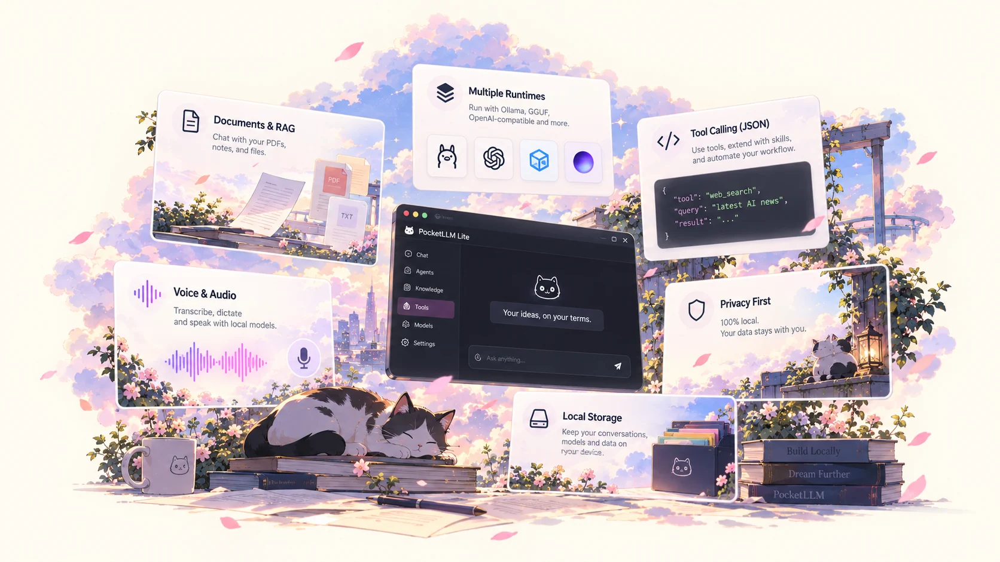

Documents & RAG
Ingest PDF, TXT, Markdown and CSV files. Use lexical, semantic or hybrid retrieval with source-aware context.
Your Personal
PocketLLM Lite is a local-first AI workspace built around a simple rule: your conversations, documents, memories and models should stay under your control.
PocketLLM Lite
No cloud profile is required to chat, save history, use personas, build local memory, or work with documents. Network features are explicit, inspectable and optional.
Own your data
Chats, local memories, prompts, personas, skills and document indexes stay in the app sandbox. Strict Offline can block non-loopback app-managed network traffic before a request leaves the app.
Explore
Not a single giant magic button. A proper local workspace with composable pieces you can understand and control.
Ingest PDF, TXT, Markdown and CSV files. Use lexical, semantic or hybrid retrieval with source-aware context.
Build reusable assistants, prompts and skills. PocketLLM composes them into the generation pipeline instead of hiding the prompt stack.
Inspect, pin, disable and supersede local memories. Retrieval falls back honestly when embeddings are unavailable.
Calculator, notes, reminders, clipboard, links and web search use schema validation and visible confirmation where required.
Dictate, listen and transcribe through supported local or platform paths, with capabilities shown instead of guessed.
Browse, import and manage models with explicit source, size, license and compatibility state. Unknown stays unknown.

Choose your route
PocketLLM separates the product from the inference backend. Pick the route that makes sense for your device and your privacy boundary.
Download
Android builds are published on GitHub with release notes and checksums. Choose the universal APK if you are unsure about your device ABI.
Loading release information…
For builders
PocketLLM Lite is MIT licensed. Read the source, reproduce the behavior, inspect the tests and contribute focused improvements. The project prefers evidence over marketing folklore, which is refreshing in AI land.
Local AI, properly
PocketLLM is being built around inspectable capabilities, portable data and runtime choice instead of tying your AI workspace to one vendor or one account.
Read the docs